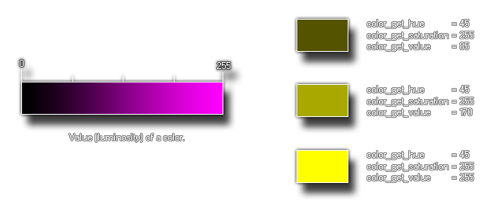

Obtiene el valor HSV de un color dado
Sintaxis
colour_get_value(col);
Argumentos
| Argumento | Descripción |
|---|---|
| col | El color al cual obtener el valor. |
Descripción
Esta función devuelve el valor de un color, el cual representa
la "luminosidad" de dicho color, siendo que 0 significa "sin nada de luz"
(haciéndose color negro), y 255 significa "totalmente iluminado".
Este valor hace parte del
modelo HSV de colores.La siguiente imagen contiene una explicación ilustrada:

Devuelve
Entero
Ejemplo
color = c_teal; sat = colour_get_value(color);El código anterior obtendrá el valor de la constante de color
c_teal y lo
almacenará en la variable sat.